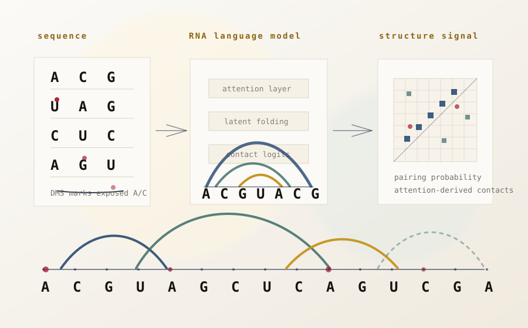
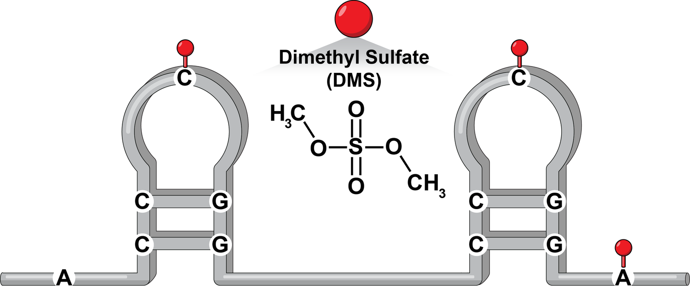
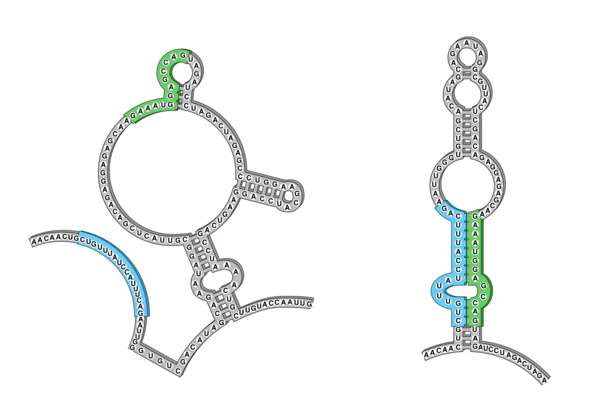

RNA structure
in living systems,
measured and modeled.
We develop in-cell RNA structure measurements and the computational methods needed to read them — from viral genomes and human transcripts to disease-relevant ensembles.
The Rouskin Lab
The same RNA sequence can fold into more than one structure — and those alternatives regulate biology.
We work at the boundary between RNA biochemistry, statistical inference, and machine learning. Our measurements turn the chemistry of folded RNA inside living cells into quantitative sequencing data. Our computation turns that data into structural ensembles, hypotheses, and falsifiable predictions.
The lab uses this loop to study viral RNA genomes, alternative splicing, antibiotic resistance, telomerase regulation, and the broader question of how RNA structure controls gene expression and disease.
Recent work
Selected papers and preprints.
Telomerase RNA structural heterogeneity in living human cells detected by DMS-MaPseq
In-cell measurement of human telomerase RNA reveals coexisting structural states — and a more complex picture of telomerase regulation than crystal structures alone suggest.
The human mitochondrial mRNA structurome reveals mechanisms of gene expression
A transcriptome-scale map of mitochondrial mRNA structure connects folding to regulation of mitochondrial gene expression.
Discovery and quantification of long-range RNA base pairs in coronavirus genomes with SEARCH-MaP and SEISMIC-RNA
A new experimental–computational pipeline to find and quantify long-range pairings in viral RNA genomes, applied to SARS-CoV-2.
Determination of RNA structural diversity and its role in HIV-1 RNA splicing regulation
DREEM separates coexisting HIV-1 RNA conformations from in-cell DMS data and links them to splicing — the first demonstration that one viral RNA sequence regulates itself through multiple structures.
Research
Five threads, one biological question.

Computation
RNA language models that expose structure from sequence
Sequence-trained RNA models can learn hidden dependencies between distant nucleotides. We compare those signals with in-cell probing to ask when model-derived couplings recover structure — and when cellular folding tells a different story.
Read more
Measurement
In-cell RNA structure probing
DMS-MaPseq turns the chemical accessibility of A and C in living cells into reverse-transcription mutations — and into quantitative sequencing-readable signal.
Read moreViral RNA
Structure and regulation of viral RNA genomes
HIV-1, SARS-CoV-2, and other RNA viruses encode regulatory programs in folded RNA. We map them in their host context.
Read more
RNA ensembles
Alternative RNA structures
When does the same sequence fold into multiple competing states, and how do those states shape gene regulation?
Read moreFrom the lab
News & coverage
Institutional context
A Harvard Medical School lab in the Department of Microbiology.
We sit between RNA biology, virology, and quantitative biology — and we collaborate broadly across HMS, the wider Harvard ecosystem, and the structural & computational biology community.